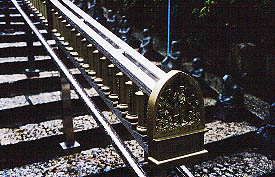

大聖院/広島県宮島町
秋である。
秋と言えば紅葉である。紅葉と言えばもみじ饅頭である。
もみじ饅頭と言えば安芸である。安芸と言えば秋である。
すなわち、秋と言えば安芸の宮島。と言えば世界遺産なのである。
さて、今や世界的に有名な厳島神社だが、その隣にある大聖院もまた厳島神社ほどメジャーではないにせよ古い歴史と高い寺格と数々の文化財で、多くのの参拝者を引き付けている。
しかしその有名寺院、古刹名刹と謳うにはちょっと？？？なのである。
なにが？？？なのかといえばあちこち細かいところが妙〜に珍寺臭いのだ。
それでは大聖院参りに行きましょうか。
 
山門を潜ると現れるのがこの石段。
右に白壁、左は鹿が佇む原生林、そして幟が並ぶ風情は古刹そのものだが両脇に一段づつ置かれている羅漢像が珍寺印の印象を強めてくれる。しかも中央の手摺には小型マニ車が装着されており個人的には楽しい気分にさせてくれる。
ちなみに私が訪れたこの日は雨で凄く寒かったので訪れる人もまばらでした。
ただし厳島神社は凄い人出だったのでもしかしたら普段もあまり人はこないのかも。
 石段の途中には羅漢像に混じってカッパやアンパンマンなどがいて油断できない。
鐘楼の下もこんな具合。羅漢さん雨宿りか？
石段の途中には羅漢像に混じってカッパやアンパンマンなどがいて油断できない。
鐘楼の下もこんな具合。羅漢さん雨宿りか？
で、石段を登り切るとさして古くない、極めて真っ当な観音堂や勅願堂と呼ばれるお堂などがある。
しかしお堂の裏手にまわれば雑多な仏像を寄せ集め場所（私は仏像溜りといっている）がいくつもあって油断できない。
 上の写真（パンフより転載）は摩尼殿という建物。二階建てのお堂で正面は唐破風かと思ったら建物とは離れていて唐破風状のアーケードでした。ここにもマニ車付き手摺があったので全力高速回転にて凄い量の功徳を積んでみました。えっへん。
1階は素通りして階段を登って何やら楽しそうな二階へ・・・
上の写真（パンフより転載）は摩尼殿という建物。二階建てのお堂で正面は唐破風かと思ったら建物とは離れていて唐破風状のアーケードでした。ここにもマニ車付き手摺があったので全力高速回転にて凄い量の功徳を積んでみました。えっへん。
1階は素通りして階段を登って何やら楽しそうな二階へ・・・
 二階の正面には万体仏がびっしりと張り付いていました。
窓から見れば厳島神社や五重塔など美しい風景が見渡せる。雨さえ降ってなければのハナシ。
で、最後に大師堂の下にある遍照窟へ。
入口は岩盤に埋もれかかっている。で、中に入ると・・・
うひょ〜！グランドキャバレー！って感じですなあ〜。
ここは15メートル四方の人工洞窟の中に四国八十八カ所の本尊をまつり、お砂踏み霊場になっているのだ。
天井には千基の灯籠が吊るされていて超ゴージャス。
似たようなものを以前香川で見かけた事があったが（そこも遍照窟という名前だった）、四国八十八カ所の写し霊場のパターンとしては西日本ではポピュラーなものなのだろうか？
二階の正面には万体仏がびっしりと張り付いていました。
窓から見れば厳島神社や五重塔など美しい風景が見渡せる。雨さえ降ってなければのハナシ。
で、最後に大師堂の下にある遍照窟へ。
入口は岩盤に埋もれかかっている。で、中に入ると・・・
うひょ〜！グランドキャバレー！って感じですなあ〜。
ここは15メートル四方の人工洞窟の中に四国八十八カ所の本尊をまつり、お砂踏み霊場になっているのだ。
天井には千基の灯籠が吊るされていて超ゴージャス。
似たようなものを以前香川で見かけた事があったが（そこも遍照窟という名前だった）、四国八十八カ所の写し霊場のパターンとしては西日本ではポピュラーなものなのだろうか？
で、ずらりと並んだ八十八カ所の本尊・・・の筈なのだが、絵馬や草鞋が大量にかけられていて原型をとどめていない。
山積みされている絵馬の塊が並んでいるようで、洞窟内の雰囲気と相まってかなり不気味だった。
奥の院や弥山巡りもしたかったが雨も激しくなってきたのでこの辺で大聖院参りも終了。
結局、この寺は真面目なんだかふざけてるんだか良く判らなかった。
アイテム的には羅漢像の行列や仏像溜り、マニ車やお砂踏み地下霊堂など珍寺印満載なのに全体の印象としては極めて真面目な印象を与えているのだ。
なんだか真顔でギャグかまされているみたいで、こっちも楽しんで良いんだか悪いんだか良く判りませんでした。
ってゆーか、もし確信的にやってるんだったら高度なギャグだよなあ。
2001.11.
情報提供はへりおすさんです。
珍寺大道場 HOME